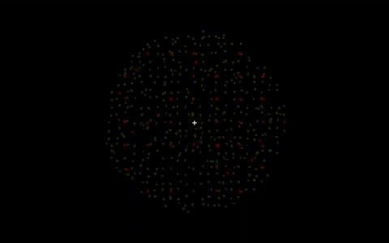
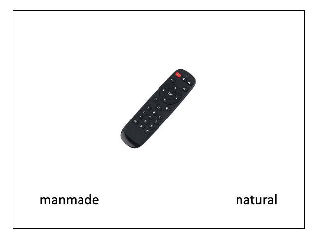
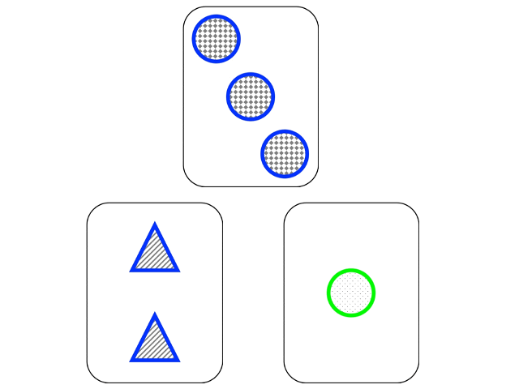
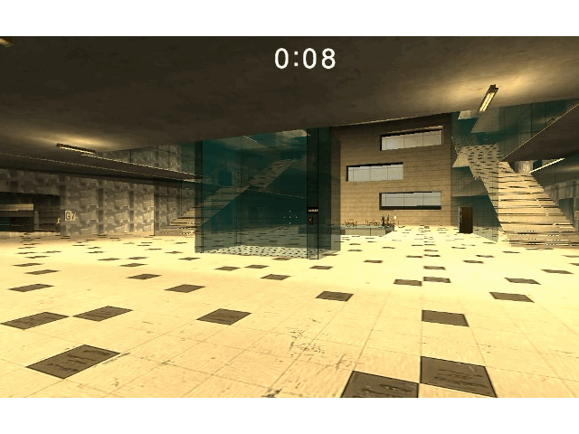

Research
Visual Attention
I studied visual attention and am interested in how perception and cognition interact. I examined brain activity while participants viewed an illusion, which I find interesting as the perceived image is distorted despite it not being physically so. I also showed differences between perceptual (data-limited) difficulty and cognitive (resource-limited) difficulty — by increasing difficulty of visual discrimination, I found regions usually sensitive to cognitive difficulty did not accordingly increase activation. In another study, I used high-temporal resolution EEG/MEG to characterize the dynamic time-course of visual attention, from object processing to target recognition.


Event Cognition and Memory
Task organization is often hierarchical, with smaller events forming larger temporal episodes, situation models, or semantic categories. For example, the goal of making a stew could involve smaller steps such as opening the fridge, washing vegetables, chopping vegetables, and cooking on the stove. A focus of my research is to understand how different brain regions represent these varying levels of information in human experience. I am also interested in how moving from one episode to another affects our temporal memory for the order in which our experiences occurred.

Cognitive Flexibility
Our world is ever-changing, therefore optimal regulation of task sets involves resolving a tradeoff between needing to implement the current task set and shielding it from distraction (cognitive stability) versus being ready to update task sets in response to changing environmental contingencies (cognitive flexibility). I am interested in how humans continuously monitor and integrate new information, and infer which task sets to use at a given time by observing environmental statistics. I am particularly interested in cognitive flexibility that translates to the real world.

